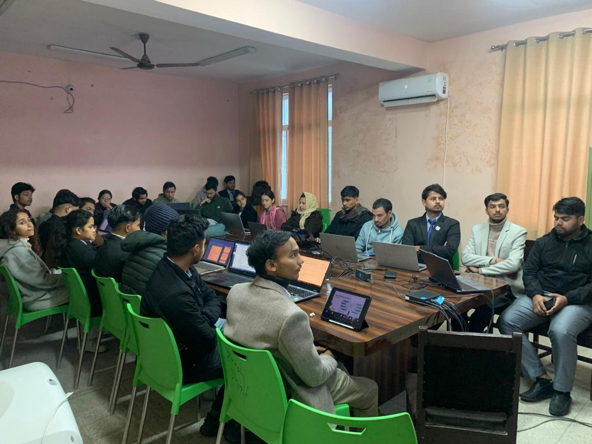
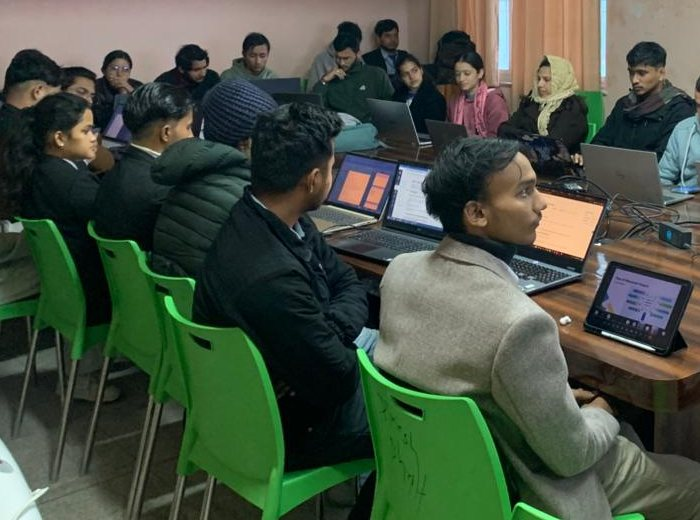
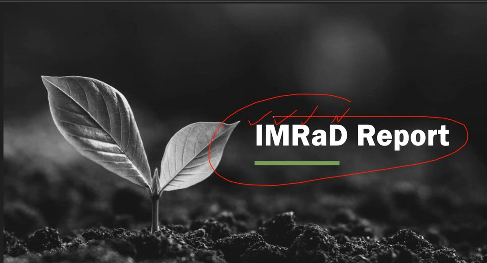
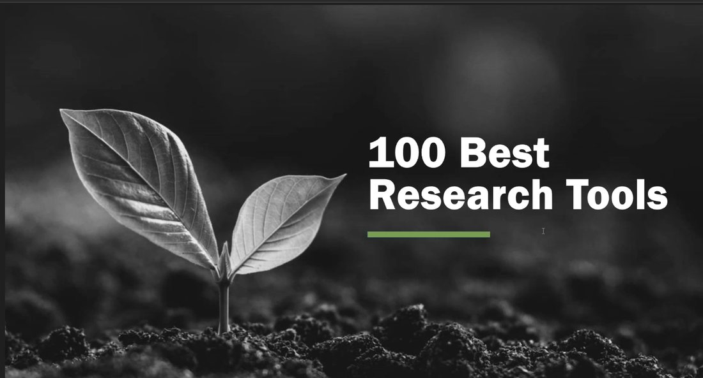

Hands-on masterclasses built to turn willingness into capability: scientific writing, LaTeX typesetting, data tools, and the working habits of real research.
Each workshop runs as a working session — a short brief, a live build, and time on your own manuscript, slides or code before you leave the room.
An intensive multi-day workshop equipping researchers with the foundational tools for academic formatting, rigorous documentation, and publication-ready manuscript preparation.




Formatting should be the quiet part of research — so the thinking can be the loud part.
Browse the workshop archive